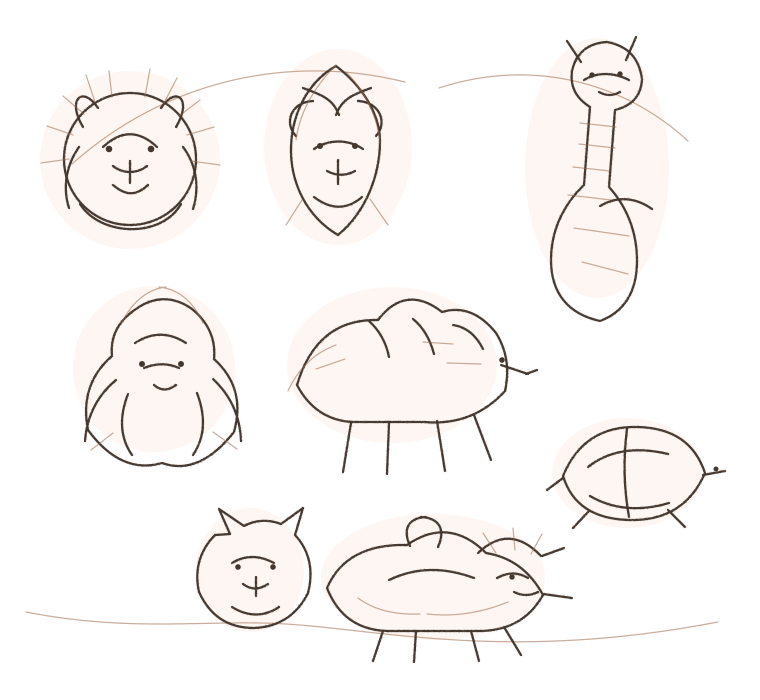
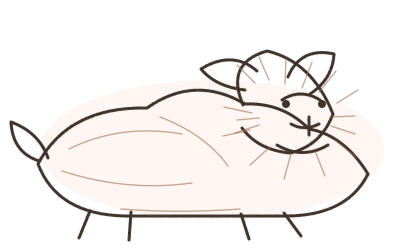
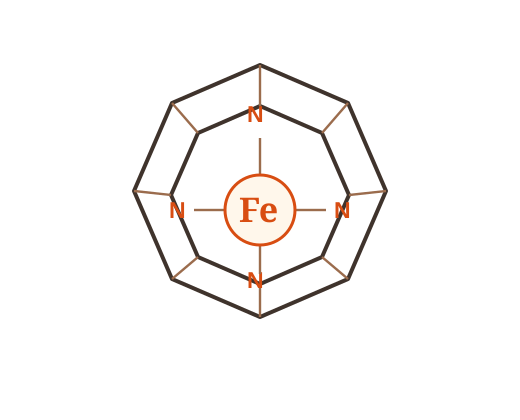
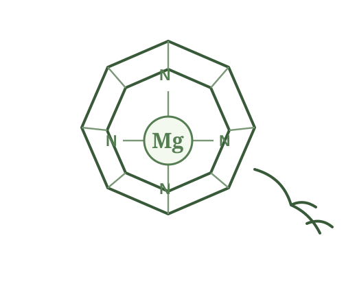

species assessed
Current IUCN Red List scale, reflecting only a fraction of life on Earth.
BHOC Veterinary
For Every Species. Wherever Life Is at Risk.
Different Species. Different Blood. One Oxygen.
One biological oxygen-transport architecture, connected by nature and studied through modern oxygen-delivery science.

Biodiversity reality
Current IUCN Red List scale, reflecting only a fraction of life on Earth.
Species currently listed by IUCN as threatened with extinction.
Approximately 28% of assessed species are threatened with extinction.
Source: IUCN Red List of Threatened Species, 2026-1 update. Open source ↗
Hemoglobin adaptation across species
Species evolved different red-cell systems, oxygen affinities, blood-group structures and physiological strategies. The carousel is designed as an expandable scientific layer, not a static decoration.
Veterinary oxygen-carrier precedent includes Oxyglobin and a defined FDA regulatory history.
Feline transfusion biology has distinct blood groups and clinically important compatibility rules.
Large-animal oxygen transport operates within a species-specific hematologic and athletic physiology.
Extreme-environment physiology illustrates how oxygen transport adapts to dehydration, heat and endurance.
High metabolic demand and specialized respiratory architecture make avian oxygen biology distinct.
Conservation medicine can intersect with critical care when rare species face anemia, trauma or surgery.
Wildlife and great-ape medicine require species-aware clinical decisions and strict evidence boundaries.

A wire-haired dachshund and the recurring companion-animal reference in the BHOC Veterinary visual system.
Nature kept the core
Heme and chlorophyll belong to related tetrapyrrole chemistry. Heme coordinates iron, while chlorophyll coordinates magnesium. The structures are related, not identical, and their biological roles are different. The carousel below makes that relationship clear without overstating it.

HEMOGLOBIN
The heme prosthetic group in hemoglobin contains an iron ion coordinated within a porphyrin ring. In hemoglobin, this iron-centered chemistry enables reversible oxygen binding.

PHOTOSYNTHESIS
Chlorophyll uses a related tetrapyrrole-derived architecture with magnesium at its center. Its role is in light absorption and photosynthetic energy conversion, not oxygen transport.
Scientific note: heme and chlorophyll share related tetrapyrrole biosynthetic chemistry, but they are not chemically identical molecules and perform different biological functions.
Red Book Mission
Veterinary critical care is not only about companion animals. Zoo medicine, wildlife rescue and conservation programs face the same time-critical biological question: can enough oxygen reach vulnerable tissues when life is at risk?
Nature engineered oxygen delivery. Science studies how to protect it.
Explore veterinary HBOC & Oxyglobin evidenceBHOC Veterinary
BHOC Veterinary connects comparative physiology, veterinary evidence, oxygen-delivery science and biodiversity protection in one disciplined scientific ecosystem.